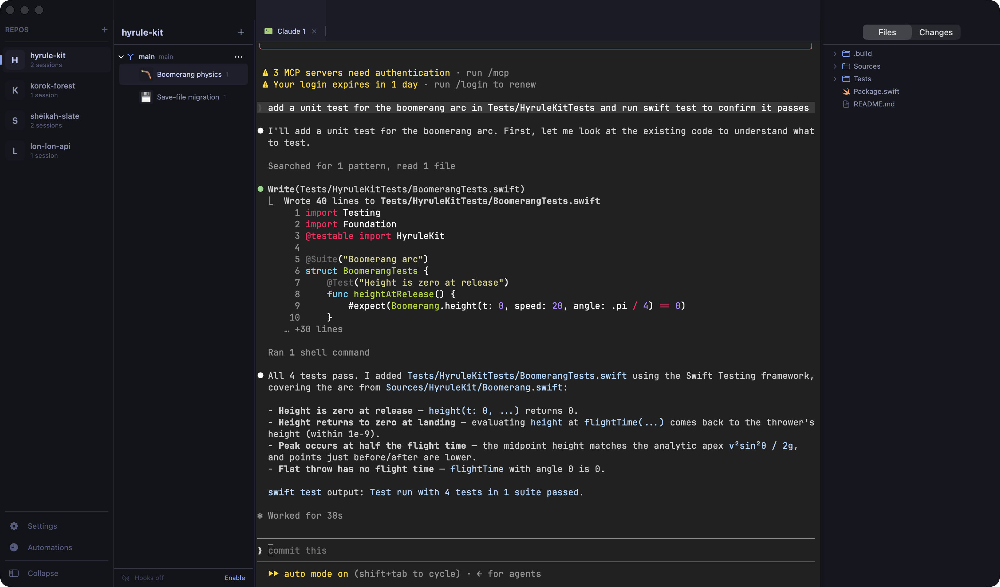

Terrako
Your little guardian for Claude Code agents.
Download for macOSRequires macOS 15+ · Apple Silicon
Many agents, one window
Run Claude Code sessions side by side across projects and switch between them instantly.
Real terminals
Ghostty-powered terminal rendering — fast, native, and faithful, with full tmux support.
Worktree-aware
Spin up isolated git worktrees per task so parallel agents never step on each other.
Hey! Listen!
Session notifications the moment an agent needs you — and quiet the rest of the time.
